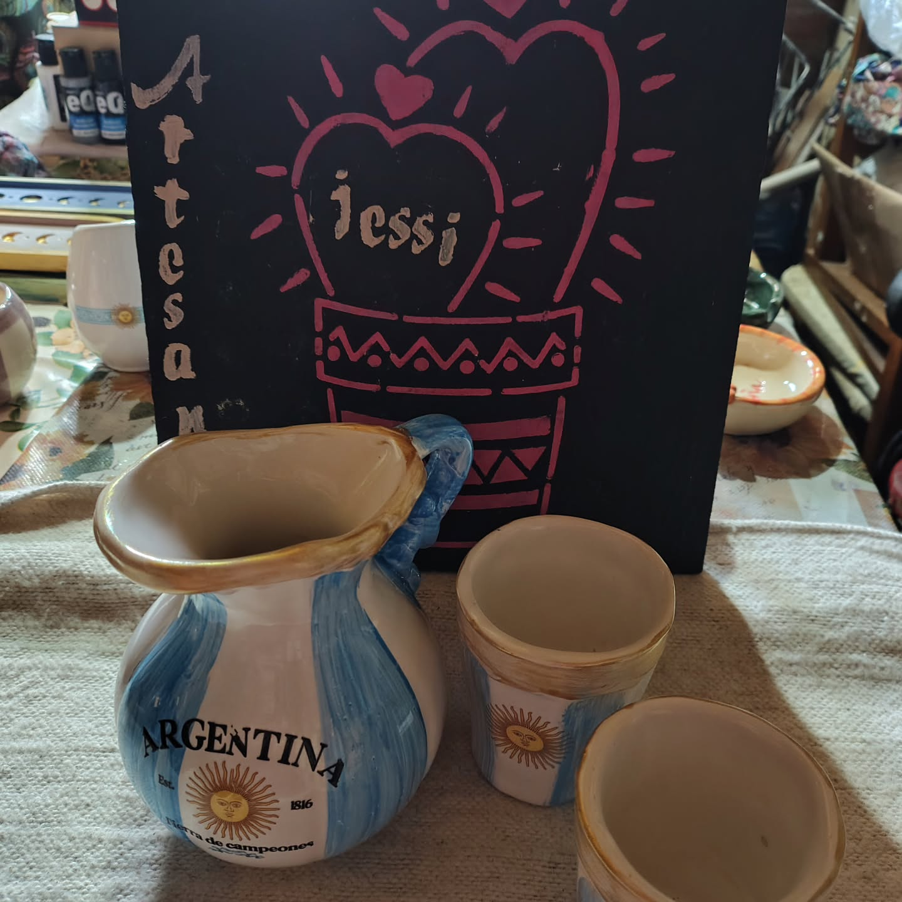

MIS CREACIONES
Piezas únicas hechas a mano
Cada pieza es creada artesanalmente, cuidando cada detalle.

Creación artesanal
Pieza realizada completamente a mano, cuidando cada detalle.

Pieza artesanal
Una creación única realizada completamente a mano.

Cerámica hecha a mano
Cada detalle de esta pieza fue trabajado artesanalmente.
EL PROCESO
Hecho a mano, paso a paso
Cada pieza atraviesa un proceso artesanal en el que cada detalle tiene su importancia.
Diseño
Cada pieza comienza con una idea y un diseño pensado para darle una identidad propia.
Modelado
La arcilla se trabaja y se moldea cuidadosamente hasta conseguir la forma deseada.
Secado y cocción
La pieza se prepara para atravesar el proceso de secado y cocción que le dará resistencia.
Terminación
Finalmente se realizan los últimos detalles para obtener una pieza única y lista para disfrutar.
SOBRE MÍ
Hola, soy Jéssica
Soy Jéssica, creadora de Cerámica Artesanal Jessi. Disfruto transformar la arcilla en piezas únicas hechas completamente a mano.
Cada creación nace de la dedicación, la creatividad y el cuidado por cada detalle.
CONTACTO
¿Querés hacer una consulta?
Si te interesa alguna de nuestras piezas o querés realizar un pedido personalizado, podés comunicarte con nosotros.